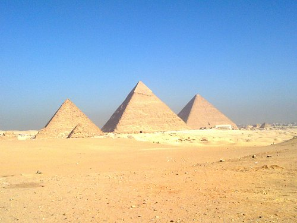
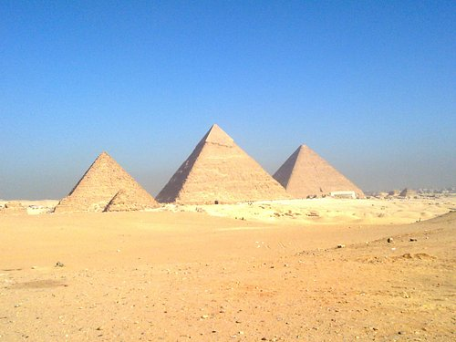
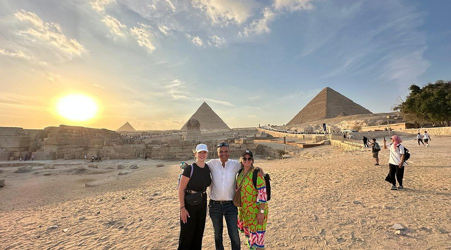
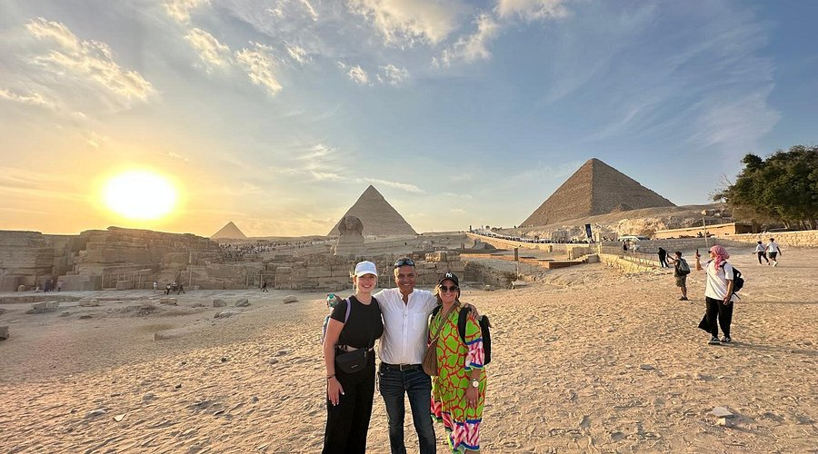

Pyramids of Giza
The most recognizable among the Seven Wonders of the World, the exact origin of these majestic pyramids continues to spark debate. 

 


Valley of the Kings
This desert valley contains the ancient burial ground of many Egyptian pharaohs. Among over 60 royal tombs is the famous Tomb of Tutankhamen that was found in pristine condition.